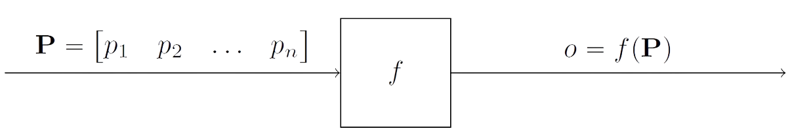

mdisd
mdisd : une librairie C++/Python pour l'interpolation multi-dimensionnelle de données.
Contexte
Considérons un système qui dépend directement de \(n\) paramètres et renvoie une quantité de sortie basée sur ces \(n\) paramètres. Par exemple, considérons une usine dont la quantité de sortie est la quantité de produits finis. Les paramètres d'entrée peuvent être, par exemple, la quantité de matériaux, l'état des machines, la fatigue des employés etc. L'usine est représenté par la fonction \(f\), le nombre de produits finis par \(o\) et les paramètres d'entrée par \(\textbf{P}\).
Il peut donc être difficile de créer un modèle qui prenne en compte tous ces paramètres afin d'estimer la quantité de produits finis pour l'état actuel de l'usine. C'est pourquoi la méthode proposée ici vise à interpoler la quantité de produits finis à partir d'une collecte de données effectuée au préalable et de l'état actuel de chacun des paramètres.
Approche
Pour ce faire, considérons que l'entreprise a pris soin de collecter les paramètres de l'usine et les quantités de produits finis correspondant à ces paramètres à plusieurs intervalles de temps différents (sur plusieurs jours, mois ou années). Considérons les \(m\) mesures de ces paramètres et des quantités de produits.
Une quantité connue de produit fini \(o_i\) peut donc être associée à un état correspondant de l'usine \(\textbf{P}_i\) for all \(i\) in \([\![1;m]\!]\). Ce qui donne en format matriciel:
L'objectif est maintenant d'estimer une nouvelle sortie \(o_{\text{new}} = f(\textbf{P}_{\text{new}})\) à partir d'une nouvelle entrée \(\textbf{P}_{\text{new}} = \begin{pmatrix} p_{\text{new,1}} & p_{\text{new,2}} &\dots & p_{\text{new,n}}\end{pmatrix}\).
Moindres Carrés Ordinaires/Ordinary Least Squares
La méthode des moindres carrés ordinaires (MCO ou OLS en anglais) est une méthode fondamentale de modélisation statistique utilisée pour estimer la relation entre une variable dépendante et une ou plusieurs variables indépendantes. Elle consiste essentiellement à minimiser la somme des carrés des différences entre les valeurs observées et prédites. Ainsi, les MCO visent à trouver la droite (dans la régression linéaire simple) ou le plan/hyperplan (dans la régression multivariée) qui s'ajuste le mieux aux points de données observés.
L'idée principale derrière cette méthode est de trouver les coefficients \(\widehat{\alpha}, \widehat{\beta}_1, \cdots, \widehat{\beta}_n\) minimisant la somme suivante dans l'optique d'avoir la plus petite distance entre les points connus et leurs estimations par regression:
Introduisons les notations matricielles suivantes:
Ainsi, les coefficients minimisant la somme sont:
Fonction à Base Radiale/Radial Basis Function
Idée : chaque point défini par \(\textbf{P}_i\) and \(o_i\) "influence" sont voisinage dans chaque direction de manière identique selon la fonctionnelle \(\phi(r)\) où \(r\) est la distance radiale.
Pour déterminer les poids \(w_i\), nous devons résoudre le système linéaire à \(m\) equations afin d'imposer que l'interpolation d'un point connu donne exactement la solution connue:
Le système peut être écrit sous la forme matricielle suivante:
où, \(\Phi = \left[\phi(||\textbf{P}_j-\textbf{P}_i||)\right]_{(i,j)\in[\![1,m]\!]^2}\) (ligne i, colonne j)
et \(\Omega = \begin{pmatrix} \omega_1 & \omega_2 & \cdots & \omega_m\end{pmatrix}^T\) (T désigne la transposée)
Résultats
Ce projet a conduit au développement de la bibliothèque mdisd, qui peut être utilisée pour appliquer les MCO (moindres carrés ordinaires), la RBF (fonction de base radiale) et d'autres méthodes telles que la NRBF (RBF normalisée) et la RBFP (RBF augmentée par des polynômes). Ce projet contient d'autres outils tels que des outils de mise à l'échelle et des fonctions de base radiales. Il génère également un fichier bibliothèque pour Python. Vous trouverez un rapport détaillé sur le Github de la bibliothèque dans le dossier doc/, ainsi que le code source et divers cas tests.